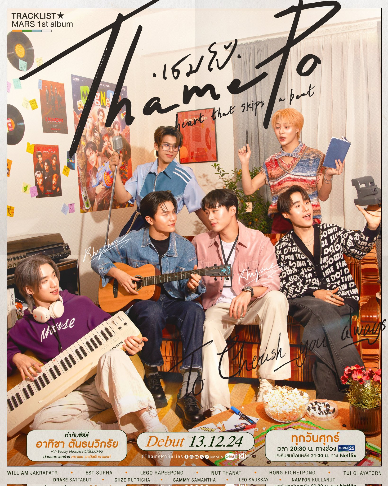
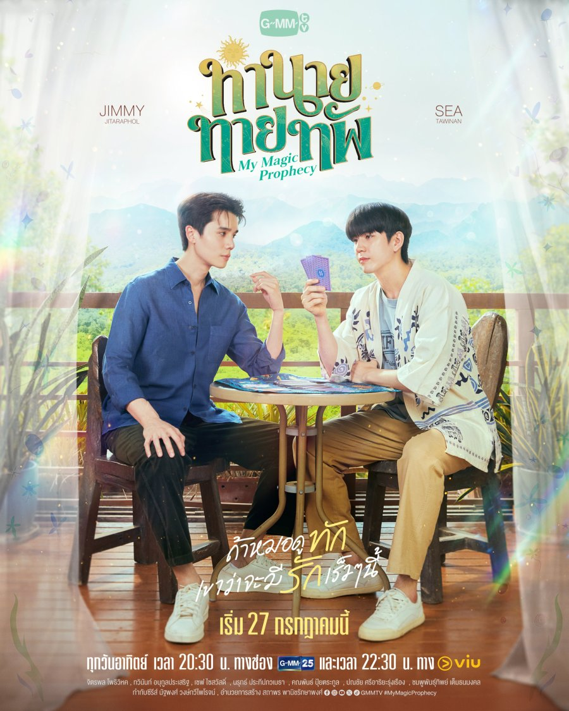
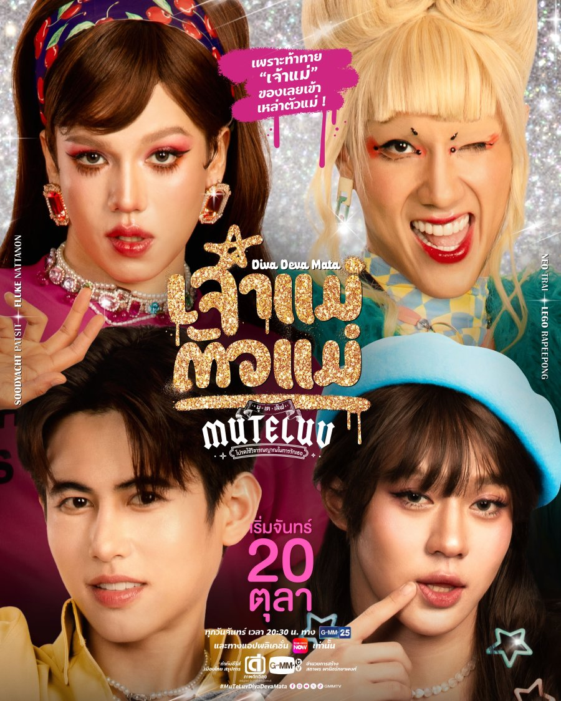
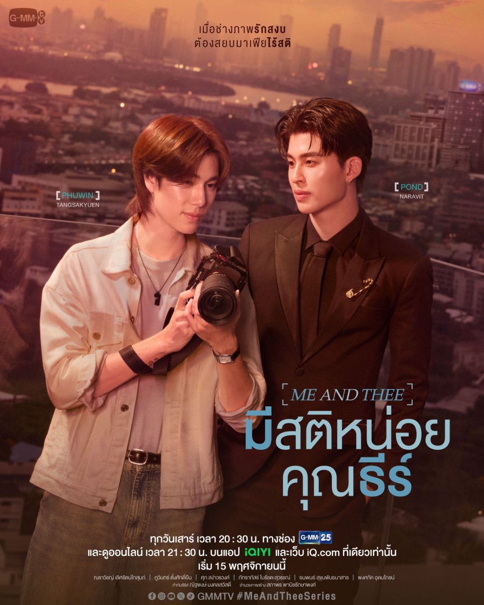
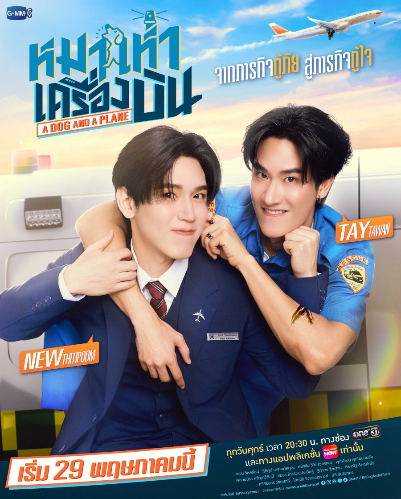
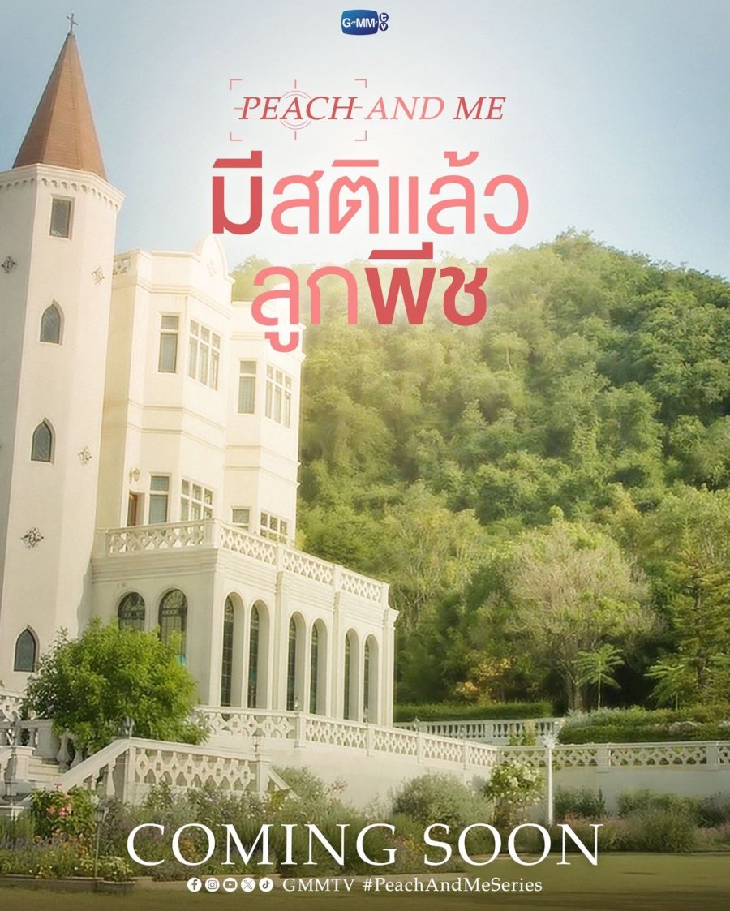
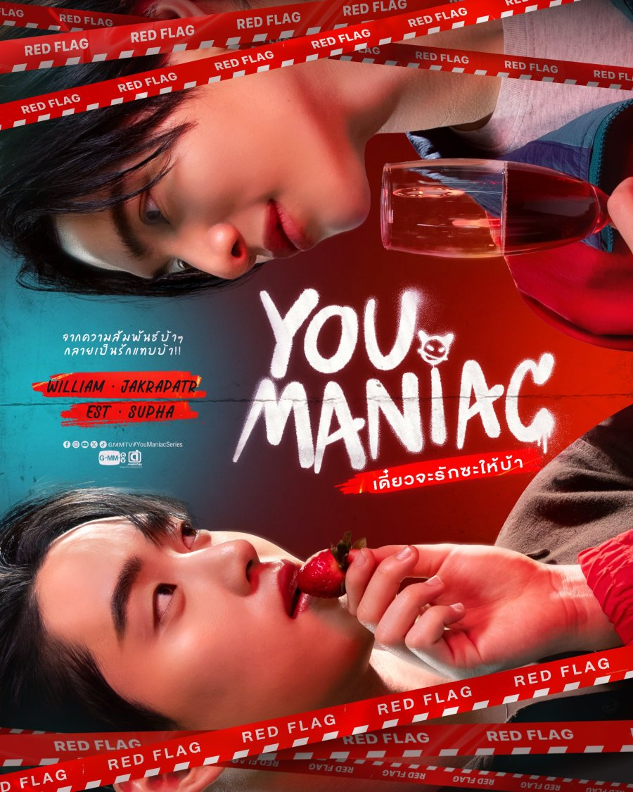
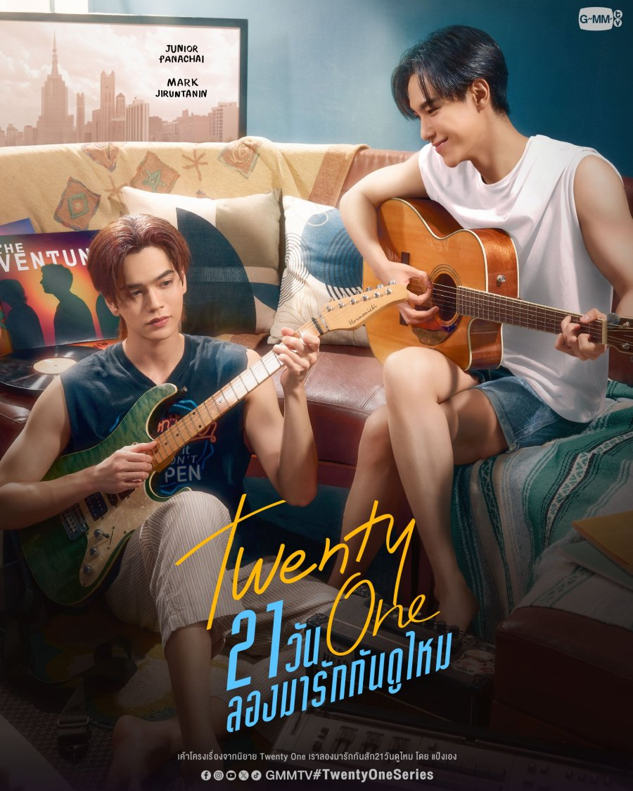

INTRODUÇÃO AO GRUPO
O LYKN é um grupo de T-pop com 5 integrantes que foi formado através do programa de sobrevivência "Project Alpha", onde 27 meninos competiram por vagas no grupo final, o programa começou em 4 de dezembro de 2022 e terminou em 5 de março de 2023. O grupo teve sua estreia no dia 5 de maio de 2023 com o single "May I" através da gravadora Riser Music, subsidiária da GMMTV, uma das maiores empresas do entretenimento tailandês.
INTEGRANTES
SÉRIES QUE PARTICIPARAM

ThamePo
Dezembro 2024 - Março 2025
Membro(s):
LYKN como 'MARS'

My Magic Prophecy
Julho - Setembro 2025
Membro(s):
Nut como 'Thiumek' (Convidado)

MuTeLuv: Diva Deva Mata
Outubro - Novembro 2025
Membro(s):
Lego como 'Ingky' (Papel principal)

Me and Thee
Novembro 2025 - Janeiro 2026
Membro(s):
William como 'Rome' (Convidado)

A Dog and a Plane
Maio - Julho 2026
Membro(s):
Tui como 'Beer' (Papel Secundário)

Peach and Me
Em gravação
Membro(s):
William como 'Rome' (Papel secundário)

You Maniac
Em gravação
Membro(s):
William como 'Dean' (Papel principal)

Twenty One
Gravação depois de agosto 2026
Membro(s):
Nut como 'Way' (Papel Secundário) e Hong como 'Night' (Papel Secundário)